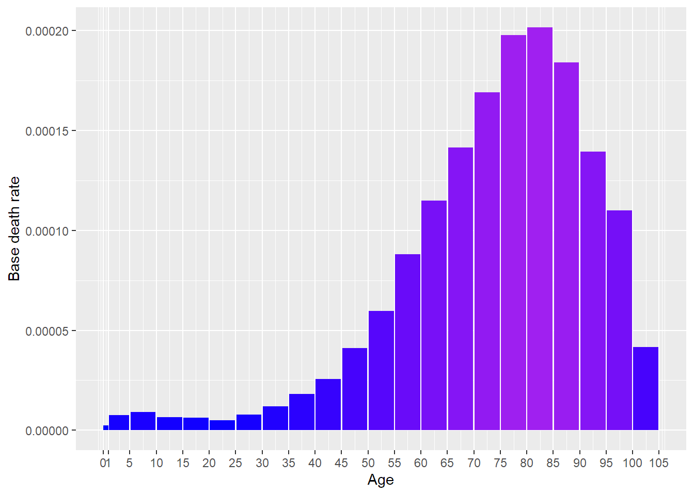
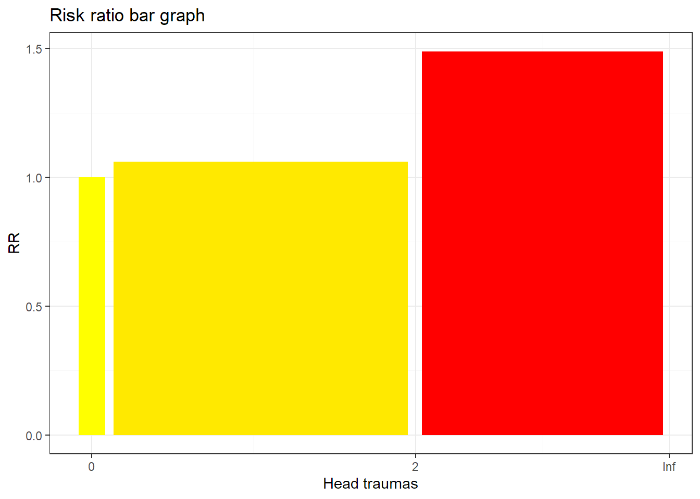
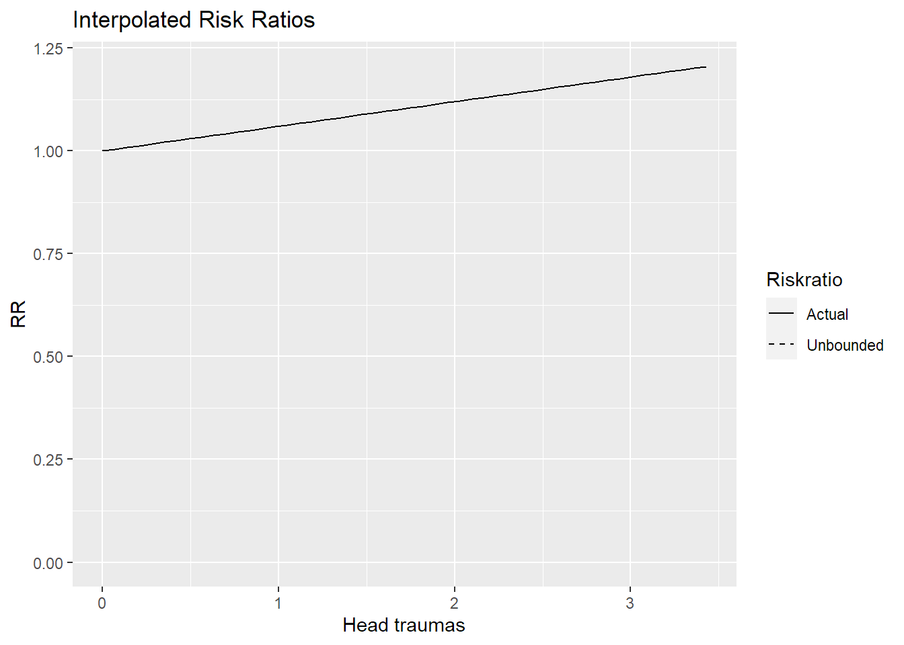

[auto-generated file]
Brain cancer is a death cause. It means that there is a certain probability that one dies from this.
Categories
Brain cancer is part of the following death cause categories
Risk factors
In the model Brain cancer has the following risk factors
Number of deaths
In 2014 Brain cancer was responsible for 0.609% of the deaths in the US. Below is a plot of how prevalent the death was for different ages (Xu et al. 2016)

Definition
The definition of dying from Brain cancer is to get any of the following ICD codes as the main cause of death on one’s death certificate. The percentage is the proportion of the deaths from Brain cancer who falls under the ICD code
C70: Malignant neoplasm of meninges (0.86%)
- C700: Malignant neoplasm of cerebral meninges (0.21%)
- C709: Malignant neoplasm of meninges, unspecified (0.65%)
C71: Malignant neoplasm of brain (99.0%)
- C710: Malignant neoplasm of cerebrum, except lobes and ventricles (1.1%)
- C711: Malignant neoplasm of frontal lobe (0.9%)
- C712: Malignant neoplasm of temporal lobe (0.62%)
- C713: Malignant neoplasm of parietal lobe (0.34%)
- C714: Malignant neoplasm of occipital lobe (0.13%)
- C715: Malignant neoplasm of cerebral ventricle (0.062%)
- C716: Malignant neoplasm of cerebellum (1.1%)
- C717: Malignant neoplasm of brain stem (1.2%)
- C718: Malignant neoplasm of overlapping sites of brain (0.13%)
- C719: Malignant neoplasm of brain, unspecified (93.0%)
C72: 0 Malig neoplm of spinal cord, cranial nerves and oth prt cnsl Malignant neoplasm of spinal cord, cranial nerves and other parts of central nervous system (0.62%)
- C720: Malignant neoplasm of spinal cord (0.27%)
- C721: Malignant neoplasm of cauda equina (0.0062%)
- C723: Malignant neoplasm of optic nerve (0.0062%)
- C725: Malignant neoplasm of other and unspecified cranial nerves (0.019%)
- C729: Malignant neoplasm of central nervous system, unspecified (0.32%)
Source: Xu et al. (2016), (“ICD Order Files 2014,” n.d.)
Interaction
The combined risk ratio of all risk factors is computed using the formula
\[
RR=RR_{\text{Head traumas}}
\]
The normalization factor is based on the joint distribution of all the risk factors and is computed using the formula
\[
P=P_{\text{Head traumas}}
\]
Head traumas
Head traumas is a risk factor for Brain cancer.
Below is a plot of the risk ratios we have taken from the literature alterated to fit our model

Because the variable Head traumas is numeric, we have computed a smoothed approximation. 
References
Xu, Jiaquan, Kenneth D Kochanek, Sherry L Murphy, and Betzaida Tejada-Vera. 2016. “Deaths: Final Data for 2014.” National Vital Statistics Reports 65 (4).